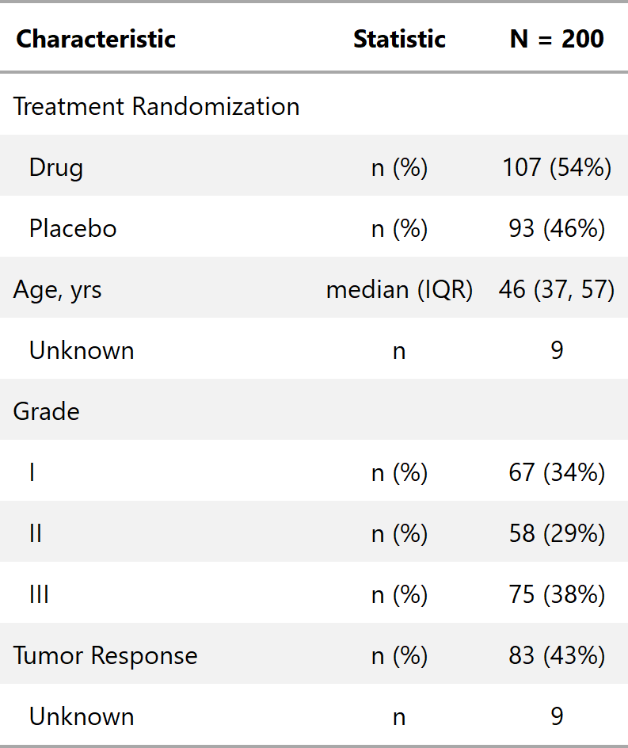

| add_stat_label {gtsummary} | R Documentation |
Rather than simply printing the summary statistics, with the use of add_stat_label(),
a column labelling the summary statistics is added
add_stat_label(x)
x |
object with class |

Daniel D. Sjoberg
Other tbl_summary tools: add_comparison,
add_n, add_overall,
add_q.tbl_summary,
bold_italicize_labels_levels,
cols_label_summary,
inline_text.tbl_summary,
tbl_summary
tbl_stat_ex <- trial %>% dplyr::select(trt, age, grade, response) %>% tbl_summary() %>% add_stat_label()